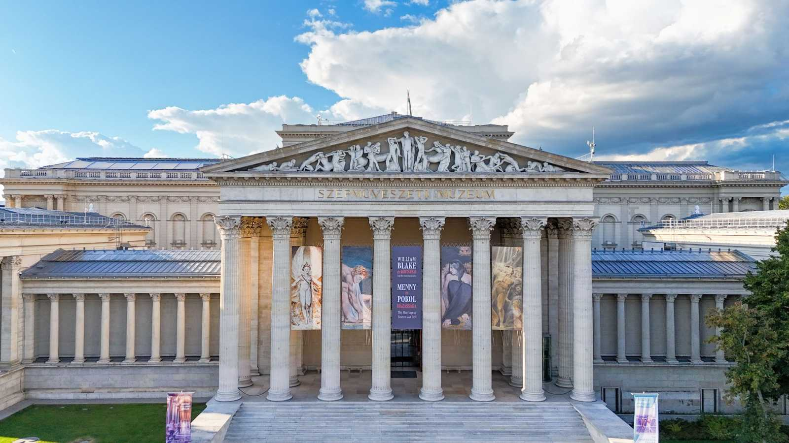
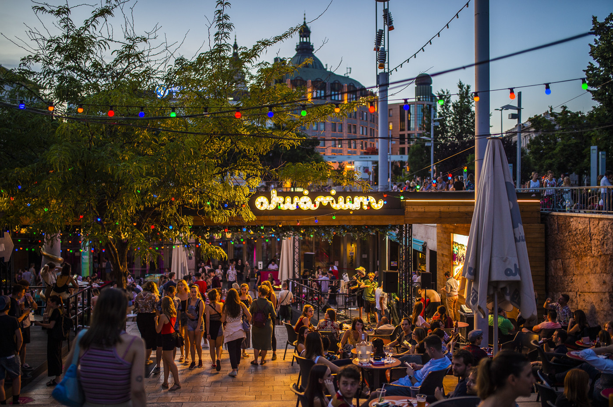
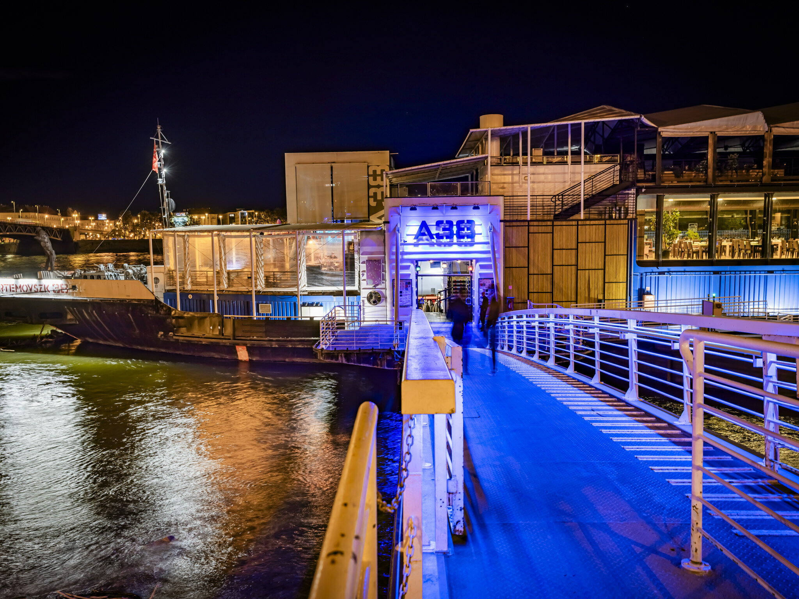
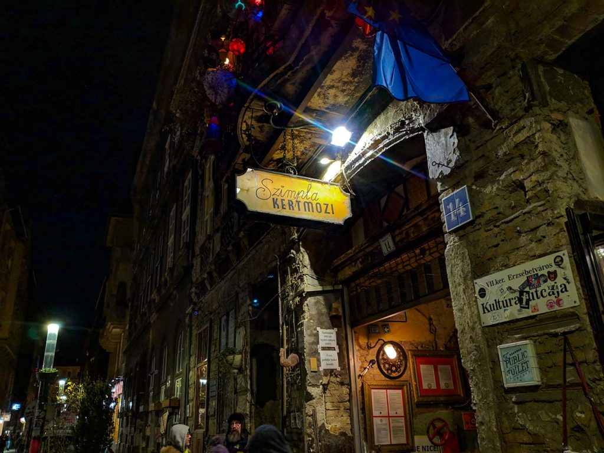
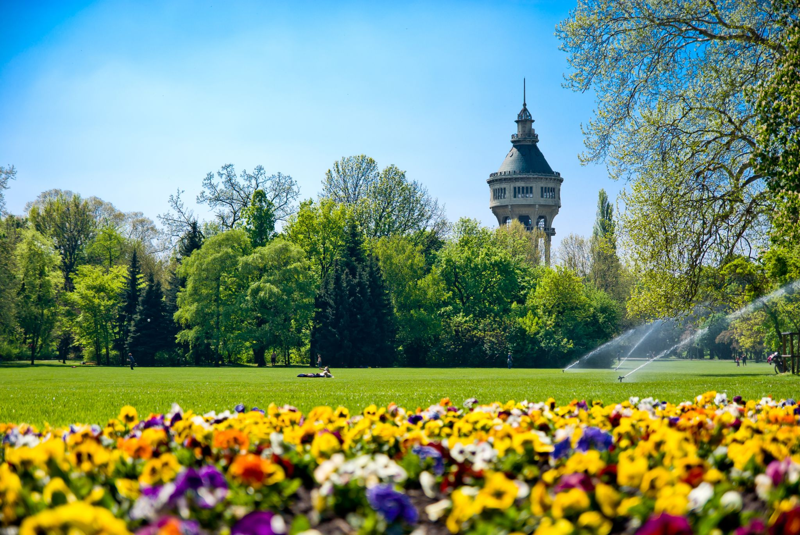
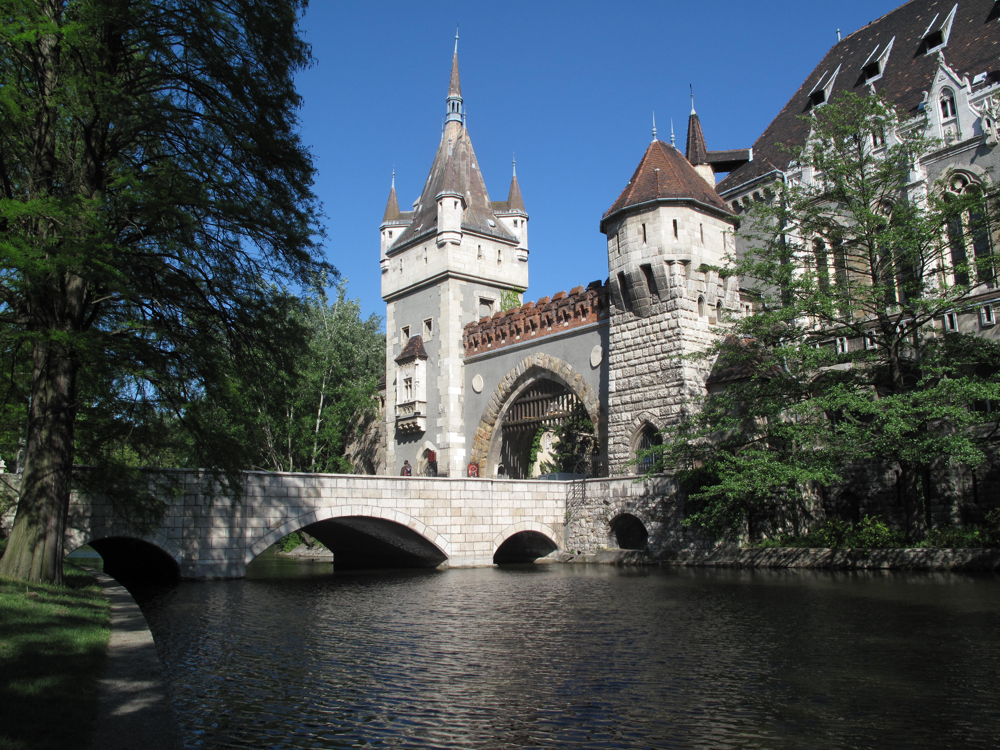
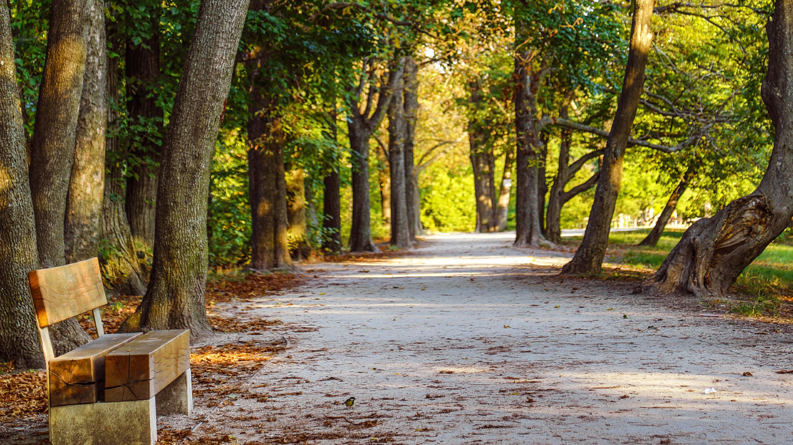

Szépművészeti Múzeum
Klasszikus és ókori műalkotások gyűjteménye a Hősök terén.
Simple. Smart. Yours

Klasszikus és ókori műalkotások gyűjteménye a Hősök terén.

A magyar történelem legfontosabb kiállításainak otthona.

Kortárs művészeti múzeum friss, modern kiállításokkal.

Belvárosi klub koncertekkel és pezsgő éjszakai élettel.

Duna-parti hajóklub változatos zenei programokkal.

Ikonikus romkocsma egyedi hangulattal és színes terekkel.

Nagy zöld sziget futópályával és nyugodt sétányokkal.

Tágas park játszóterekkel, tóval és kulturális helyszínekkel.

Kedvelt kirándulóhely gyönyörű panorámával.
A BpMap segítségével egyszerűen felfedezheted Budapestet! Szűrők és interaktív térkép segít megtalálni a legjobb helyeket, kedvenceidet elmenteni, és saját várostérképedet kialakítani. Tökéletes mind turistáknak, mind helyieknek, akik szeretnek új helyeket felfedezni.